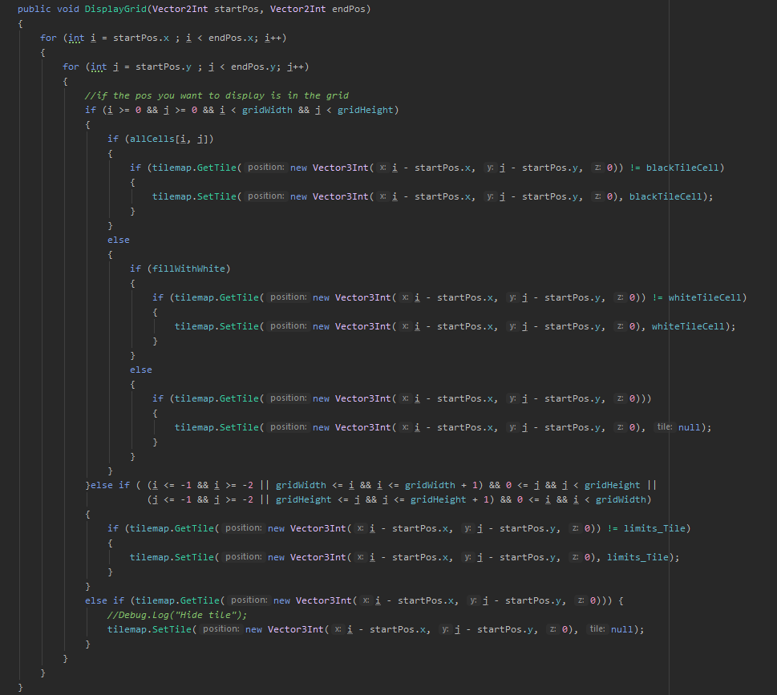
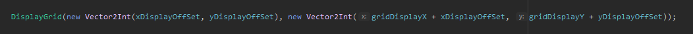

si vous ne connaisez pas le jeu de la vie, j'ai utiliser ce site pour trouver tous les patterns
J'ai découvert le jeu de la vie il y'a quelque années grâce à cette vidéo de science étonnante
C'est un projet que j'a réaliser seule et ce n'était pas un travail d'école, c'était un projet asser spéciale car il est plus éloigner du jeu vidéo que mes autres projets. Le projet permet principalement de jouer au jeu de la vie sur une grille qu'ont peut définir, il permet aussi de randomiser la grille pour avoir rapidement des choses interressantes, placer des patterns que l'ont choisie ou des une cellule, tous les patterns palcable sont aussi tournable dans 4 directions(c'est une fonctionnalité que je n'ais pas trouver sur d'autre jeu de la vie). Vous pouvez tester le projet sur la page itch.io du projet accessible en bas de cette page.


A part les fonctionnalitée principale le projet possède d'autres fonctinnalitée :
fondamentales : click droit pour se déplacer sur la grille, roullette de la souris pour zoomer
Le projet permet aussi de jouer le jeu en automatique ou manuel et de définir le temps entre chaque tours.
Afficher/cacher la grille. Désactiver l'affichage des tiles blanches qui remplisse le tableau.
Le projet possède aussi un système de menu pour accèder à chaque fonctionnalitée et ranger les patterns dans leur groupe.
Le projet est fait sur Unity, j'ai d'habord créer un script isolé qui simule uniquement le jeu de la vie sur un tableau à double entrée de bolean, le jeu est ensuite affiché en utilisant les tilemap de unity
Optimisation :
Le projet a eu besoin d'optimisation à un certain point, l'optimisation c'est faite avec la manière d'affiché le jeu, j'ai donc utiliser différentes techniques : uniquement mettre les tiles sur la tilemap si elles ont besoin d'être changer (avant de mettre une tile sur un emplacement ont regarde la "nature" de la tile à cette emplacement, ont aurait aussi pu enregistré le tableau avant le tour et le comparé à celui après pour savoir quelle tile aurait besoin d'être changer(solution non tester)).
La plus grosse optimisation à été d'afficher uniquement une certaine partie du tableau(elle est affiché toujours au même endroit déplacer la grille est enfaite déplacer la partie affiché).
Je stoque les pattern en tant que class qui contienent une list de Vector2Int qui représente toutes les cellule du pattern (la position 00 sera l'emplacement de la souris), une position maximal qui est le x et le y max que le pattern atteind (qui sert à ne pas pouvoir placer un pattern en dehord des limite de la grille et pour pouvoir tourner les patterns). La list de Vector2Int de certain pattern peut être très longue j'ai donc essayer de la rendre lissible même pour des pattern asser gros comme la tortue :

Voici la fonction qui permet de tourner les patterns sur quatres directions:

Voici la fonction qui permet d'afficher la grille:
Elle est appeler avec ces paramètres:

Ce projet ma permit de partiquer et d'apprendre énormément sur l'utilisation des lambda expression que j'avais commencer à utiliser à la fin de mon dernier projet.